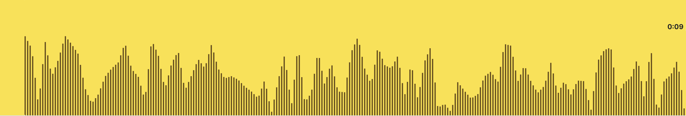
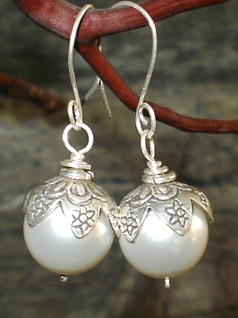

Every morning in the village unfolds with the rhythmic crash of ocean waves against coastal rocks, fishing nets rustling in coastal breezes, and neighbors chatting warmly. Villagers gather together over steaming fish rice, air-crying salted fish paired with warm congee, while handcrafting delicate pearl adornments.
The climate shifts gracefully between balmy tropical sunbeams and swift ocean rains. During seasonal harvest rituals, lively fishermen's folk songs echo along the coast under starlit skies, expressing deep gratitude to the benevolent ocean.